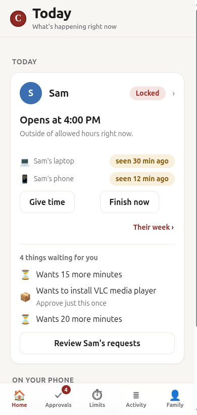
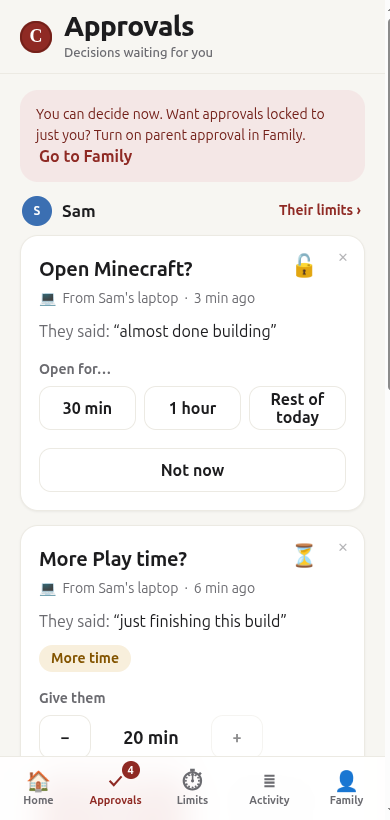

The light they leave with.
Four apps for learning what time, money, freedom and connection are worth. Every one carries the same flame.

The Kindred way
Most family apps keep a company in the middle. Kindred doesn’t.
A typical family app
- Your child’s phone
- A company’s serversAn account, your child’s date of birth, a running record
- Your dashboard
You hand over an account and your child’s date of birth, and a company holds a running record of where they went and what they looked at, so you can be shown a dashboard of it.
Kindred
- Your phoneSigns the rules with your family’s own keys
- A relayOnly passes them on, sealed
- Your child’s deviceEnforces them, right there
Kintrinsic’s rules are signed with your family’s own keys, carried over an encrypted relay and enforced on the device. There is no platform account in the middle, and no server holds your family’s data.
We couldn’t read your family’s life if we wanted to.
The family of apps
Four flames. One family.
Kindred is the umbrella for four family apps. Each helps a child learn what something is worth: time, money, freedom and connection.
Trust, in time.
Screen time and web filtering that loosen as your child shows they’re ready. The aim is to hand freedom back over time, not to build a cage.
- Schedules, budgets, per-app limits and web content.
- You and your child see the same picture.
- No account, no location tracking, no browsing history uploaded.
Runs on Linux computers today, with de-Googled Android in preview. A supervision aid, not a substitute for supervising.

Parachute, not helicopter.
Consent-based family location and safety: there for the landing, out of the way the rest of the time.
- Your child chooses how precisely they’re seen: Town, Neighbourhood, Street or Precise.
- They hear first. A private heads-up, with a grace period, before anyone else is told.
- Circles of people you trust: beacons, SOS, check-in, pickup and dropped pins.
- Sign-in through My Signet; the app never holds your family’s identity keys.
In development. No store listing and no date yet.
We’re all family here.
Messaging with no way in from outside. Everyone in it is someone you both chose.
- No search, no usernames to look up, no friend requests: nothing for strangers to find.
- In by invitation that you and your child both approve.
- Encrypted end to end, with no account with us and no ads.
- Oversight in three tiers, agreed together, and your child always knows which one they’re on.
In design. No date yet.
Pocket money on a shared ledger.
Every choice visible to you both. Parent and child see the same account, so nobody is working from a number in one person’s head.
- One ledger, with every entry co-signed by you both.
- Nothing silently edited: a correction is a visible reversal, with a reason you can both read.
- Your child asks to spend; you see what for and how much before you answer.
- No card, no bank link, no real money.
Android first. You can build it from source today; no store listing or date yet.
How it’s built
No middleman.
-
Open source
Kintrinsic, Kindependence and Kinterest are open source, under the MIT licence.
-
Your family’s own keys
Kintrinsic’s rules are signed with your family’s own keys and enforced on the device. No platform account in the middle.
-
Chosen together
Your child sees the same rules you do, and everyone in a Kinclude chat is someone you both chose.
-
An open protocol
Messages between your phone and your child’s device travel over Nostr, an open protocol with no central server.
Kintrinsic is live today.
The rest of the family is on its way: Kindependence, Kinclude and Kinterest.